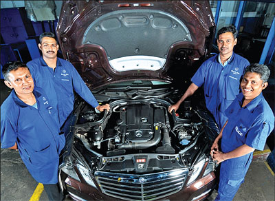
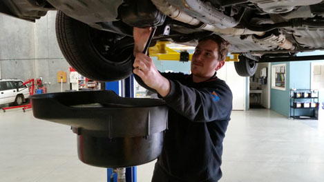
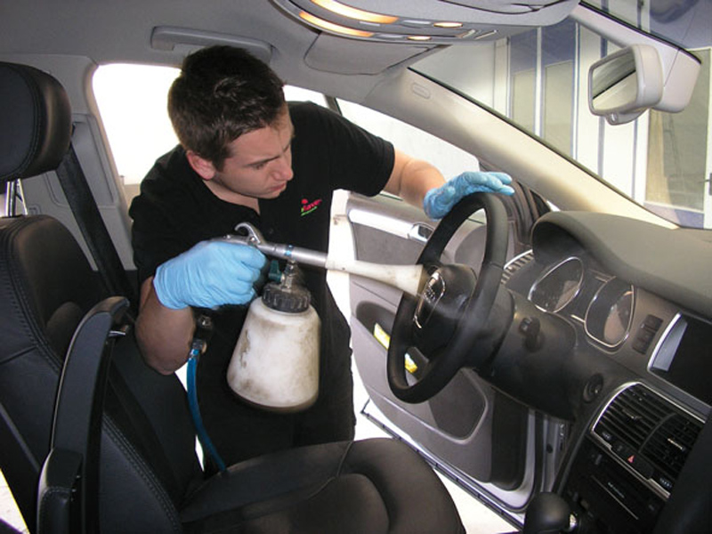
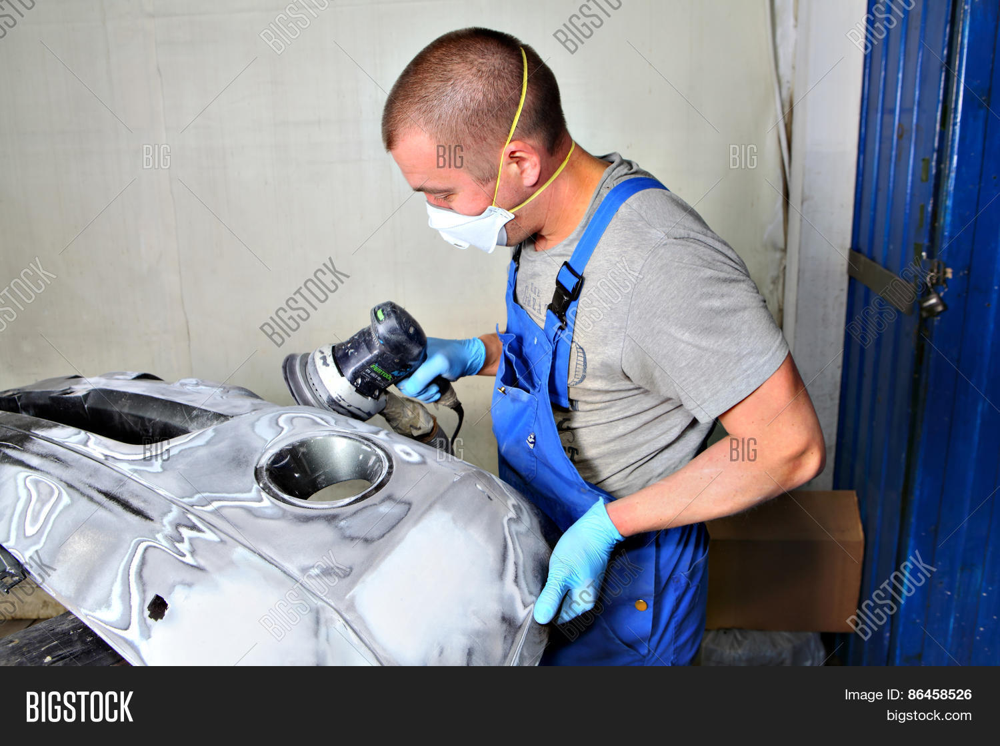

|
Automotive Diagnostic/ Scanning 12V, 24V(19) (Check Engine icon) New generation Diagnostic scan tools are used to diagnose fault in system such as engine, ABS, airbags, auto boxes, immobiliser, body control and air suspension etc.Air Conditioning, Heating and Climate Control System All auto air conditioning related repaires & service including new instalation.EDB (Electronic brake-force distribution) An automobile brake technology that automatically varies the amount of force applied to each of a vehicle's brakes, based on road conditions, speed, loading, etc. Always coupled with anti-lock braking systems, EBD can apply more or less braking pressure to each wheel in order to maximize stopping power whilst maintaining vehicular control. Typically, the front end carries the most weight and EBD distributes less braking pressure to the rear brakes so the rear brakes do not lock up and cause a skid. In some systems, EBD distributes more braking pressure at the rear brakes during initial brake application before the effects of weight transfer become apparent.Break System ABS (Anti-lock Brake System) With ordinary brakes, if conditions were bad and you had to “slam” on the pedal, the brakes would often lock up and cause you to skid. It’s why experts would tell you to “pump” your brakes in those situations. That’s what anti-lock brakes do. They provide that pumping action, although they do it much faster than a human ever could, as fast as ten times per second. Plus, sensors can detect which wheel is most likely to lock up and direct most of the action there.ESC (Electronic stability control) Electronic stability control (ESC), also referred to as electronic stability program (ESP) or dynamic stability control (DSC), is a computerized technology that improves the safety of a vehicle's stability by detecting and reducing loss of traction (skidding). When ESC detects loss of steering control, it automatically applies the brakes to help "steer" the vehicle where the driver intends to go. Braking is automatically applied to wheels individually, such as the outer front wheel to counter over steer or the inner rear wheel to counter under steer. Some ESC systems also reduce engine power until control is regained. ESC does not improve a vehicle's cornering performance; instead, it helps to minimize the loss of control.Emission Control Systems Vehicle emissions control is the study and practice of reducing the motor vehicle emissions produced by motor vehicles, especially internal combustion engines.Radiator and Cooling System Your cooling system plays an important role in your vehicle’s performance. Left alone, an engine would become extremely hot, overheat and even begin to melt. The cooling system helps keep your engine cool, and running.Coolant Radiator coolant has anti-boil, anti-freeze and anti-corrosive properties. It flows through your radiator and engine and helps keep everything working at the right temperature. We recommend changing your coolant at least ones a year.Fuel System Cleaning – Diesel, Petrol Fuel system cleaning is important to maximizing your car’s performance. Dirty fuel injectors can result in poor acceleration, lower power, poor fuel economy, rough idling and an incorrect air/fuel mix. They can also lead to higher carbon monoxide emissions. It doesn’t take much to clog your fuel injectors either. Their openings are roughly half the size of a pinhole. And it only takes an 8% to 10% blockage to cause a misfire in your engine. That’s why it’s so important to have your fuel injectors checked by Auto Miraj.Steering and suspensions system Steering and suspensions system Properly maintaining your vehicle’s suspension helps restore ride comfort and handling performance. It can also eliminate premature tire wear. Auto Miraj also has expertise to handle EPS (Electronic Power steering) and Height control related repairsComplete Engine overhaul An overhauled engine is an engine which has been removed, disassembled, cleaned, inspected, repaired as necessary and tested using recommended procedures. The procedure generally involves honing, new piston rings, bearings, gaskets, oil seals. When completed the engine will perform as new. |
     |